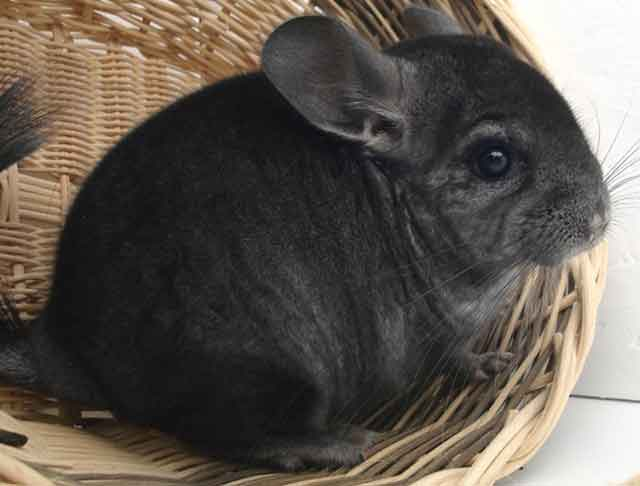
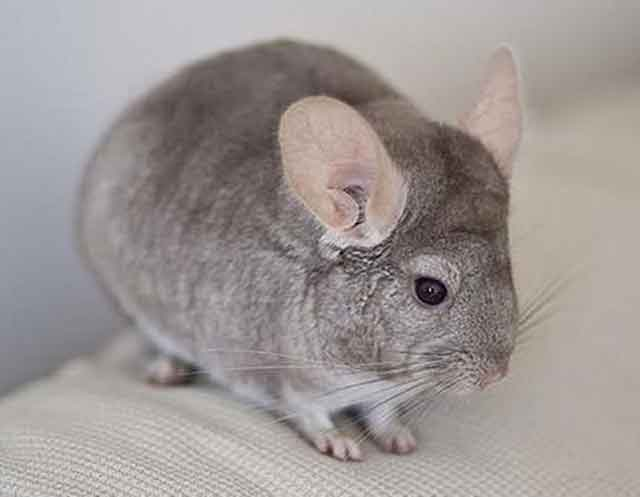
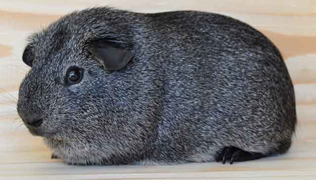
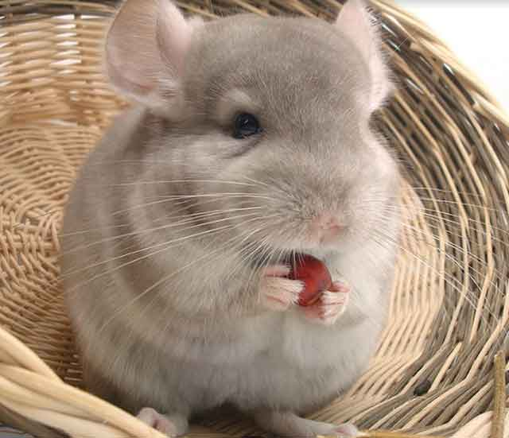
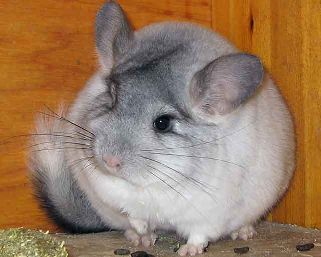

친칠라는 무엇을 먹을까?
친칠라는 키우는 분들이 점점 늘어가고 있습니다. 아주 귀여운 외모가 매력적인 친칠라는 햄스터, 토끼와는 다른 매력으로 사랑받고 있는 데요. 친칠라는 생각보다 예민한 동물로 항상 예의주시하며 관리가 필요합니다. 적정한 온도는 필수! 먹이도 지정된 것만 먹여야 하죠. 먹기도 잘 먹지만 놀기도 잘 놀고 케이지 안에 온 데 배변을 해놓기도 합니다. 그래서 보통 손이 가는 동물이 아니기에 책임감을 느끼고 키우기 시작해야 하는 데요. 만약 친칠라를 키우기로 마음먹었다면, 먹이는 무엇으로 하는 게 좋을지 알아볼까요?
친칠라는 먹이에 신경을 써야 하는 동물입니다. 소화기관이 약한 동물이기 때문이죠. 그래서 친칠라는 섬유질과 단백질은 풍부하면서도 수분과 지방이 낮은 식단이 필요합니다. 수분량이 많으면 설사를 할 수 있답니다. 상추, 배추, 양배추와 같은 채소나 과일도 잘 먹기는 하지만 채소나 과일 속에 있는 수분이 소화기관을 자극해 위험할 수도 있으므로 정해진 먹이만 급여하는 것이 중요합니다.
친칠라가 먹기 좋은 사료는 '펠렛용 사료'입니다. 물론 모든 펠렛 사료가 가능한 것은 아니며 성분을 꼼꼼하게 따져봐야 하는 데요. 앞서 설명해 드린 바와 같이 섬유소는 친칠라에게 아주 중요한 요소입니다. 그래서 펠렛을 구매할 때 섬유소의 함유량을 꼭 따져봐야 합니다. 즉, 섬유소가 많은 먹이가 좋은 먹이인 거죠. 그렇다고 다른 성분을 간과해서도 안 되겠죠. 지방이나 수분 역시 높으면 좋지 않다는 것이지 아예 없어도 된다는 것은 아닙니다. 그래서 적절한 수분과 지방이 있는 것도 나쁘지 않습니다.
친칠라의 또 다른 먹이는 건초입니다. 건조 역시 친칠라가 좋아하는 간식으로 다양한 영양소와 섬유질이 풍부한 건초입니다. 건조도 종류가 다양해 여러 가지 건초를 배합해서 급여하는 것도 좋은 방법입니다. 단, 친칠라는 예민한 동물인 것을 고려한다면 펠렛이나 건초를 바꿀 때 주의해야 합니다. 갑자기 먹는 음식이 바뀌면 상당한 스트레스를 받는다고 합니다.
새로운 펠렛이나 건조를 바꿀 때는 기존의 펠렛을 많이 넣어주시고 새로운 펠렛을 조금씩 넣어주는 것이 좋습니다. 그리고 시간이 지나면서 점차 새로운 펠렛의 양을 늘려 2~3주 후에 새로운 펠렛으로 완전히 교체할 수 있습니다. 또한 펠렛을 매일 새것으로 교체해 주는 것도 중요합니다. 즉, 오래된 펠렛 위로 새로운 펠렛을 올려주는 일 없어 소량 급여하여 펠렛을 모두 소진할 수 있도록 하거나 아니면 완전히 새것으로 교체하는 것이 좋습니다.
친칠라는 설치류입니다. 그래서 씹는 것을 좋아합니다. 평소 급여하는 사료 외에 씹는 것을 즐길 수 있도록 나뭇가지나 설치류 동물이 좋아하는 장난감을 넣어주는 것이 좋습니다.
친칠라의 먹이. 모든 동물이 그렇지만, 먹는 것에 스트레스받지 않도록 관리하는 것! 친칠라를 잘 키우는 방법이 아닐까요?
[출처] 친칠라는 무엇을 먹을까? ｜ 작성자 브런치